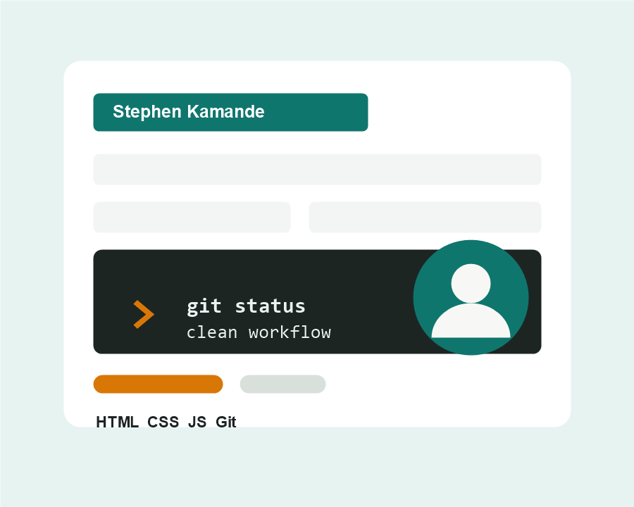

Terminal Workflow
Created folders, files, and logs from the command line while keeping each step easy to review.
IYF Weekend Academy - Week 03
I am Stephen Kamande, a frontend learner building responsive pages, clean project structure, and dependable Git practices. This portfolio documents the tools and workflow skills I practiced during Week 03.

What this project covers
Created folders, files, and logs from the command line while keeping each step easy to review.
Practiced commits, branches, merges, remotes, and publishing updates to a GitHub repository.
Built a consistent multi-page portfolio with shared styling, accessible navigation, and clear content.